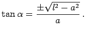

Konchoide des NIKOMEDES nennt man den geometrischen Ort aller Punkte  für die mit M als Schnittpunkt der Verbindungslinie zwischen 0P1 und 0P2 mit der Asymptote x = a die Bedingung
für die mit M als Schnittpunkt der Verbindungslinie zwischen 0P1 und 0P2 mit der Asymptote x = a die Bedingung
 |
(2.221) |
erfüllt ist.

Das Vorzeichen ,,+`` gilt für den rechten und ,,-`` für den linken Kurvenzweig. Die Gleichung der Konchoide des NIKOMEDES in kartesischen Koordinaten, in Parameterform und in Polarkoordinaten lautet:
- 1. Rechter Zweig:
- Die Asymptote ist
 ; der Scheitelpunkt A liegt bei ; die Wendepunkte B, C haben als x-Wert die größte Wurzel der Gleichung
; der Scheitelpunkt A liegt bei ; die Wendepunkte B, C haben als x-Wert die größte Wurzel der Gleichung
Die Fläche zwischen dem rechten Zweig und der Asymptote ist .
- 2. Linker Zweig:
- Die Asymptote ist ; der Scheitelpunkt D liegt bei . Der Ursprung ist ein singulärer Punkt, dessen Charakter von a und l abhängt:
-
Für l < a ist es ein isolierter Punkt (obere linke Abbildung). Die Kurve hat dann zwei weitere Wendepunkte E und F, deren Abszisse sich als zweitgrößte Wurzel der Gleichung x3 - 3a2x + 2a(a2 - l2) = 0 ergibt.
-
Für l > a ist der Koordinatenursprung ein Knoten- bzw. Doppelpunkt (obere rechte Abbildung). Die Kurve besitzt ein Maximum und ein Minimum an der Stelle .
Die Tangentensteigung beträgt im Koordinatenursprung 
Der Krümmungsradius ist hier
-
Für l = a wird der Koordinatenursprung zum Rückkehrpunkt (untere Abbildung).